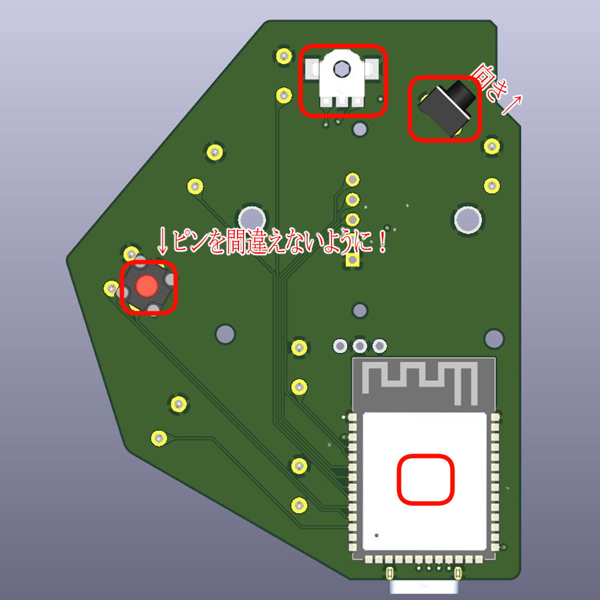
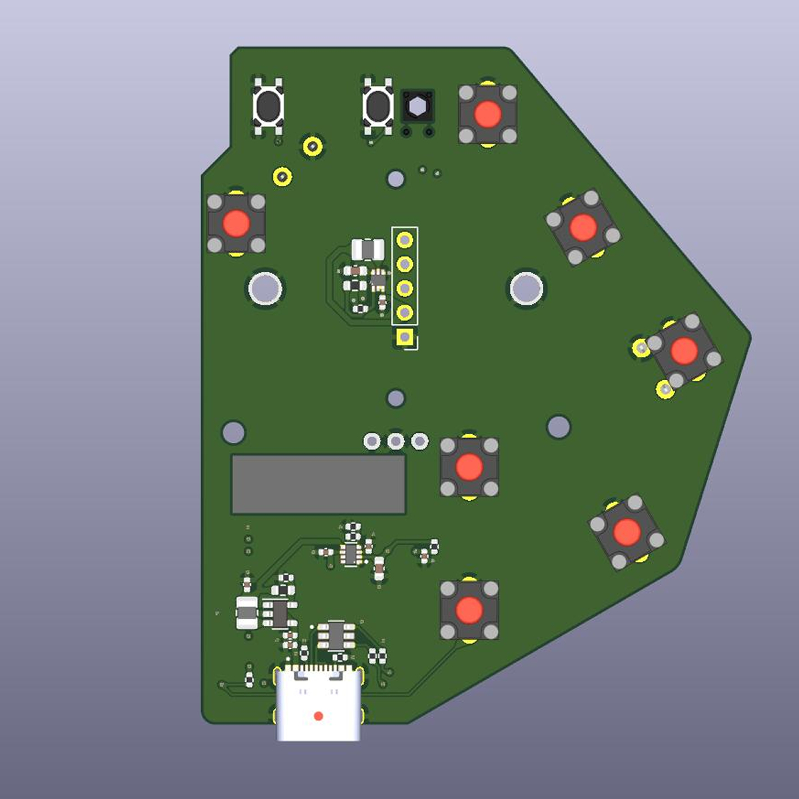
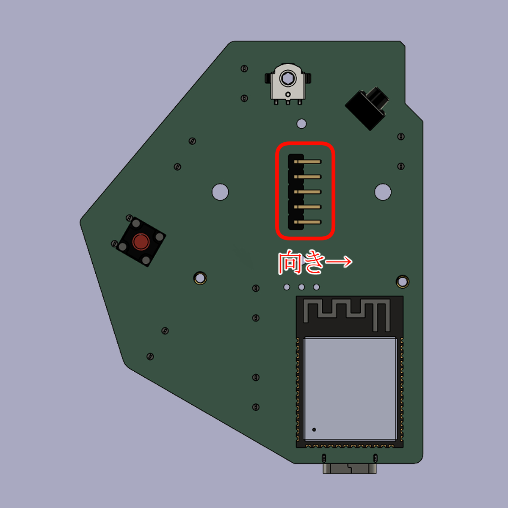
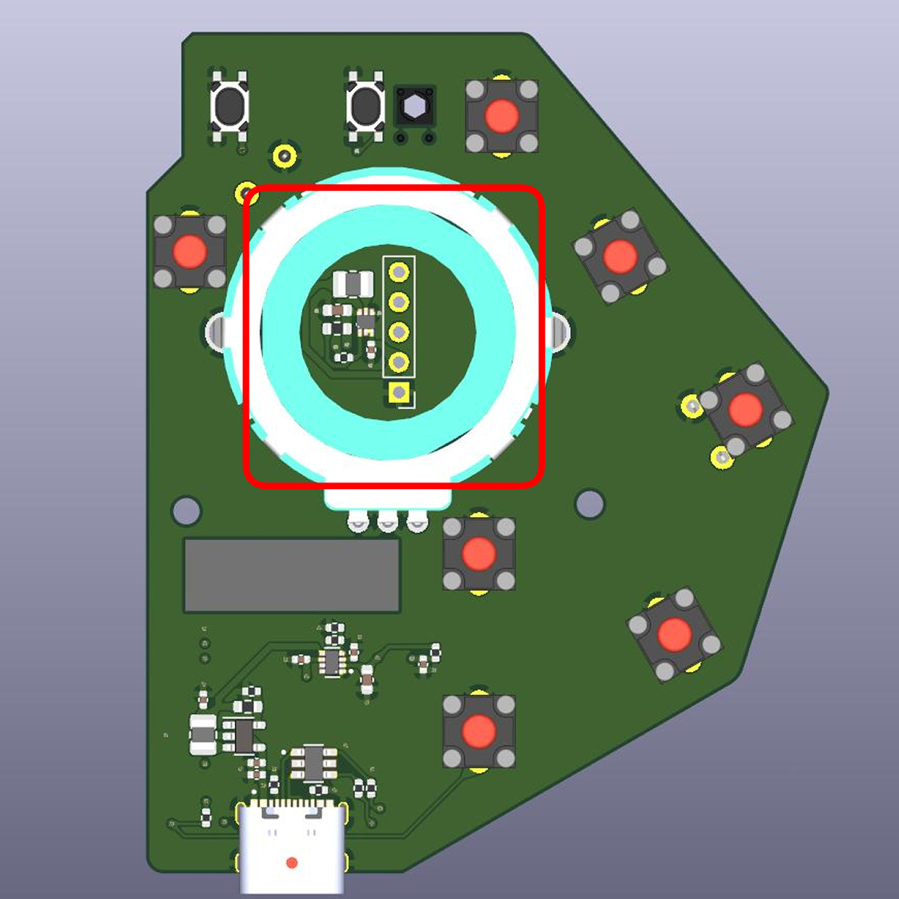
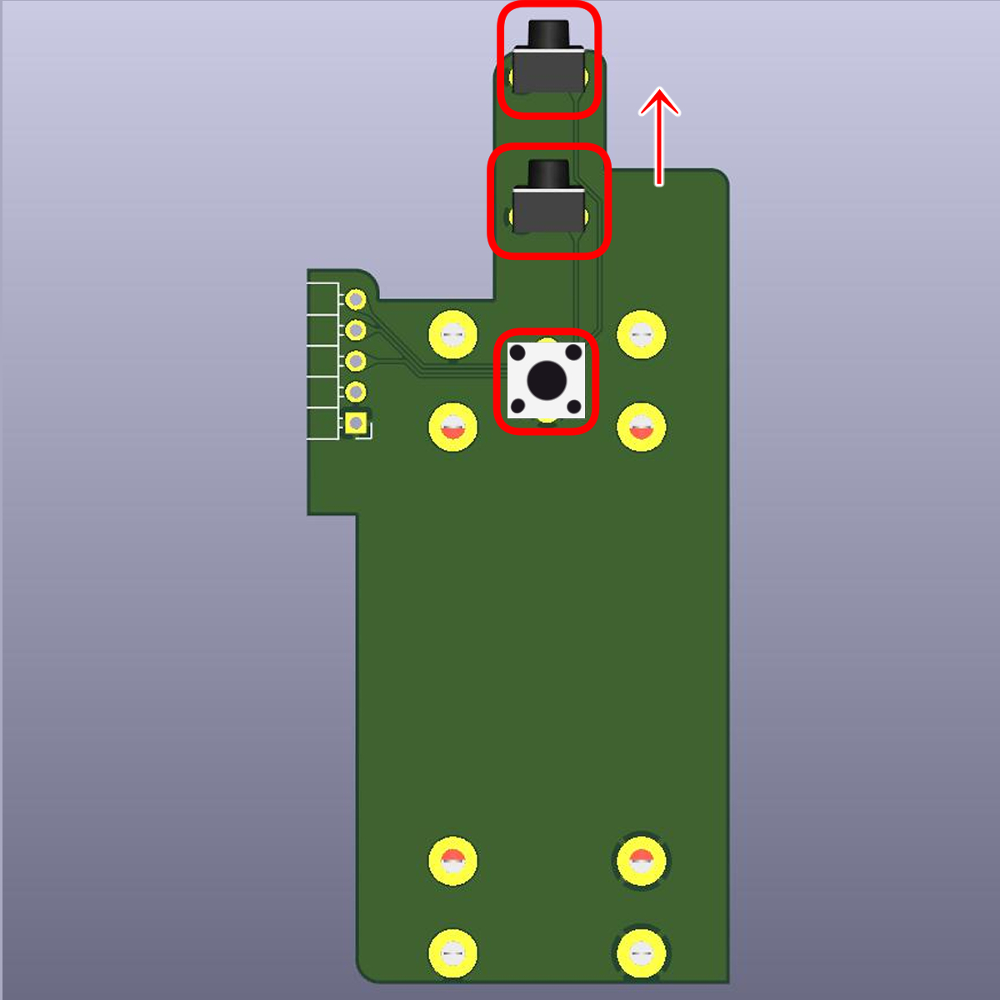
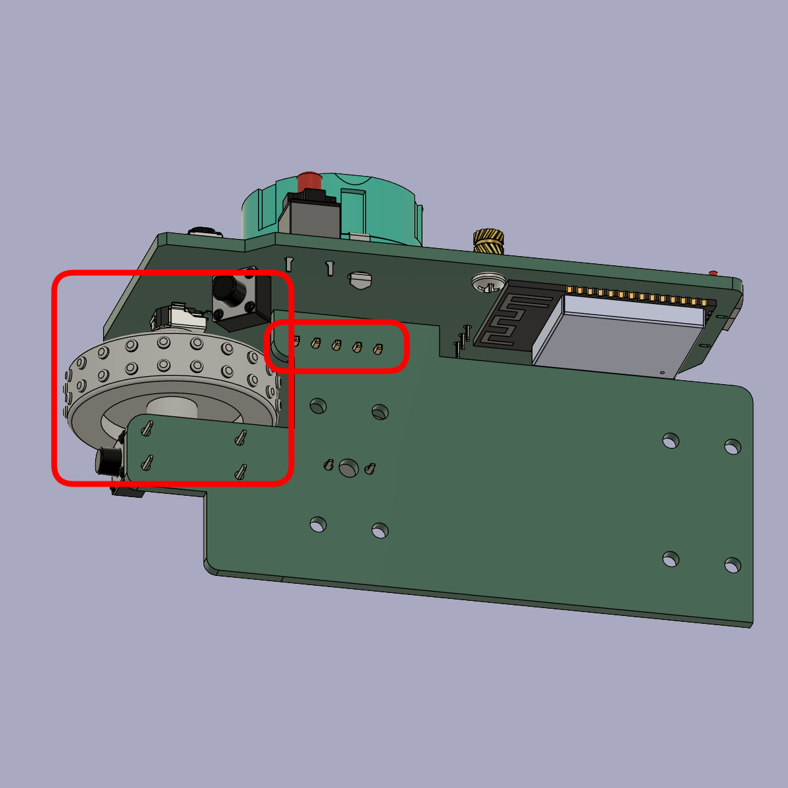
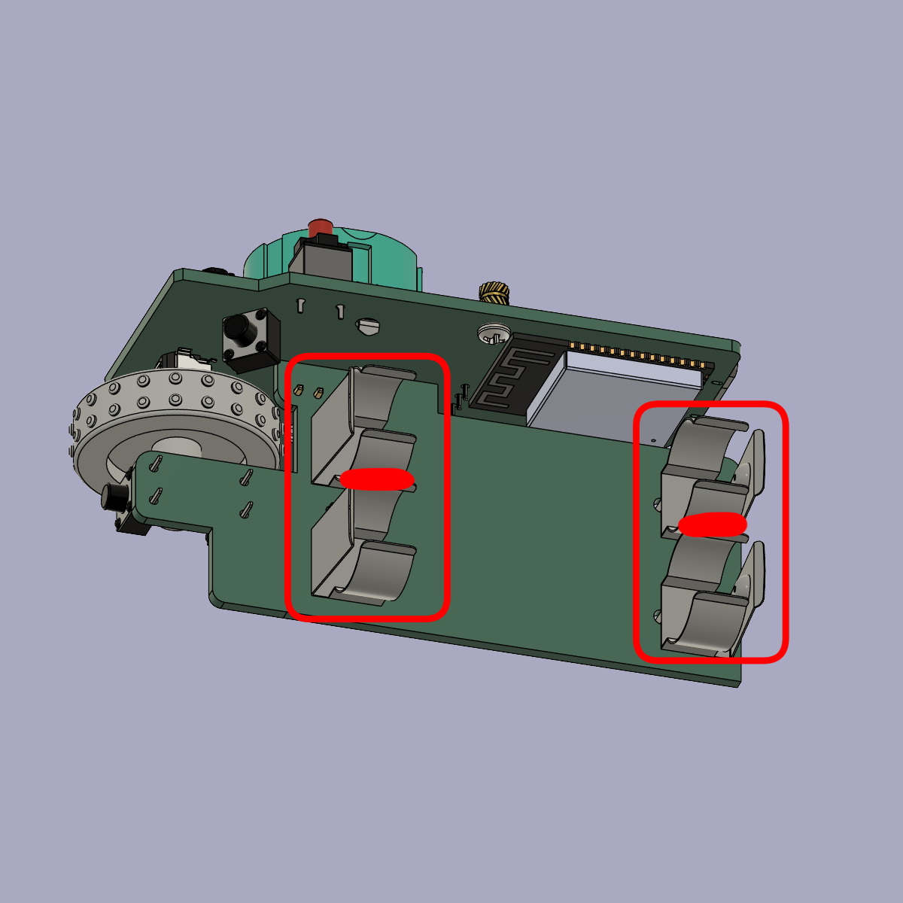
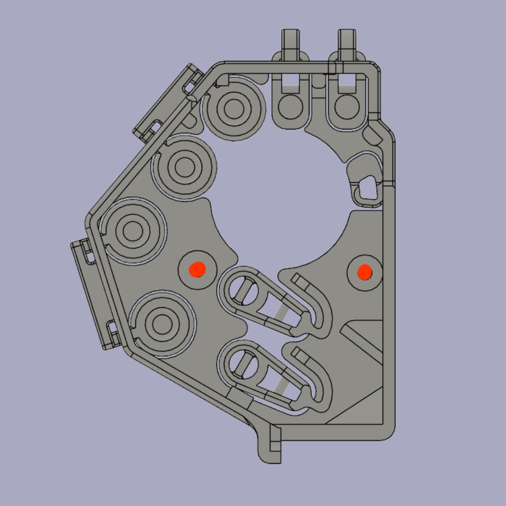

組み立てに別途必要なもの
- ESP32-S3-WROOM-1-N16R8
- 筐体
- 単3電池（アルカリ・ニッケル水素）
筐体の3Dデータはこちらからダウンロードしてください。
ダウンロード
はんだ付け

メインボードの裏面からはんだ付けを始めます。
・ESP32 x1
・ロータリーエンコーダー x1
・静音タクトスイッチ x1
・横向きタクトスイッチ x1

表面に静音タクトスイッチをはんだ付けします。
・静音タクトスイッチ x7

裏面にピンヘッダーをはんだ付けします。
・ピンヘッダー x1

表面に中空ロータリーエンコーダーを
はんだ付けします。
・中空ロータリーエンコーダー x1

サイドボードにはんだ付けします。
裏表に注意してください。
背高タクトスイッチの足が長いので切断してください。
・横向きタクトスイッチ x2
・背高タクトスイッチ x1

ホイールを先に取り付けボード同士を繋げます。
塗装のためホイールがはまらないことがあります。
カッターなどで少し削ってください。
・ホイール x1

電池ホルダーをはんだ付けします。
ホルダーの間に絶縁テープを貼ります。
・電池ホルダー x4
インサートナット埋め込み
